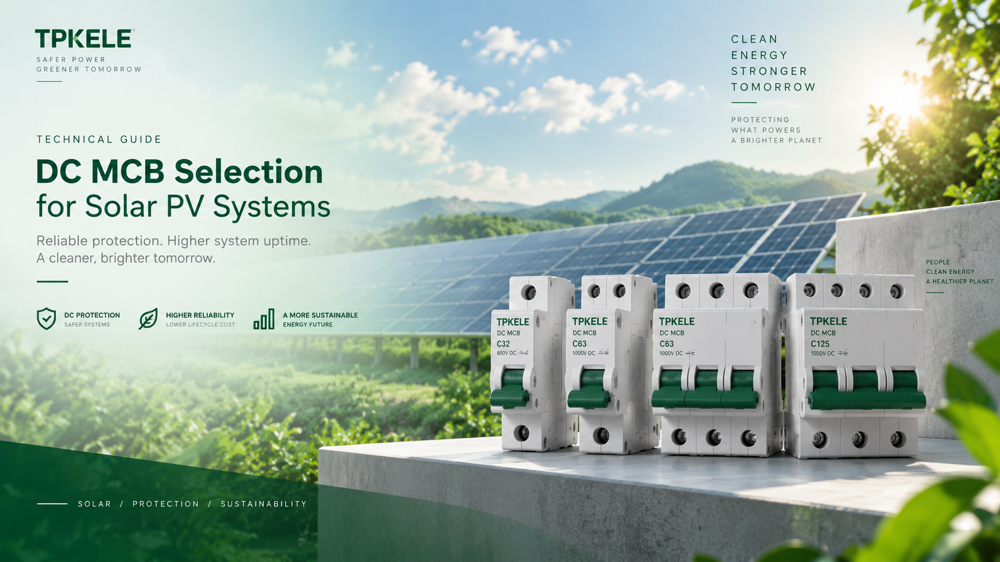
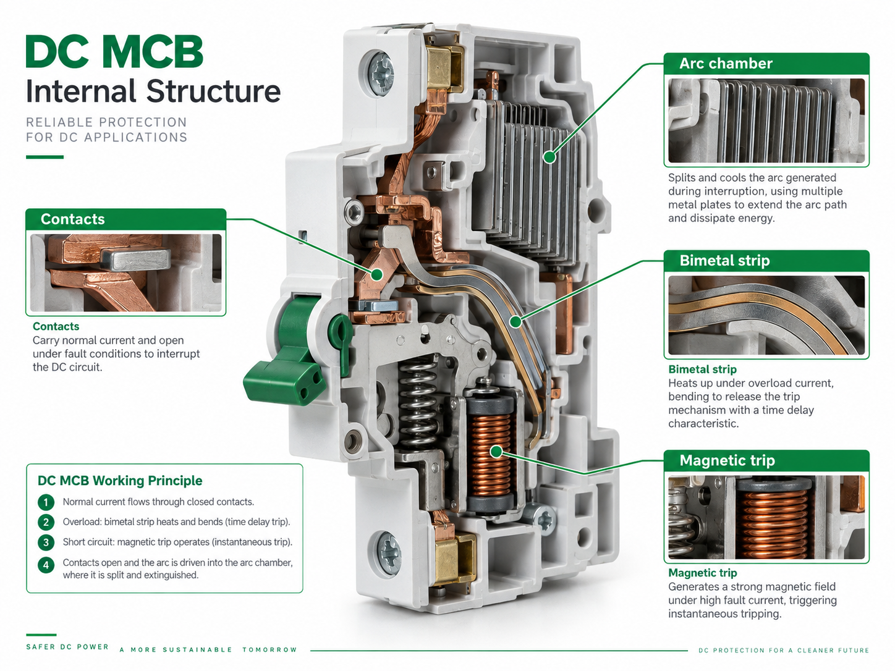
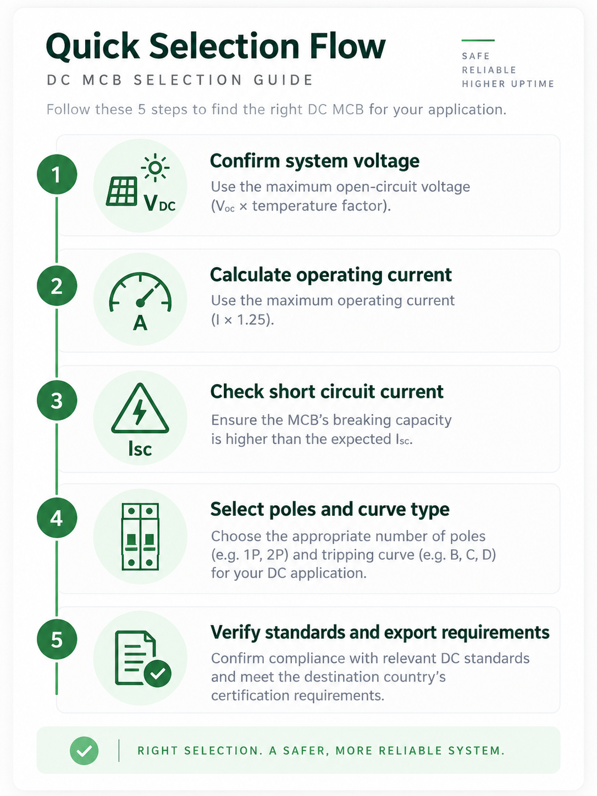

Technical Guide | Solar PV | DC Protection
DC MCB Selection Guide for Solar PV Systems
Select the right DC miniature circuit breaker for solar PV string and combiner box protection.
Reviewed by TPKELE Technical Team
Updated: 2026-09-07 | 12 min read
Select the right DC miniature circuit breaker for solar PV string and combiner box protection.
Reviewed by TPKELE Technical Team
Updated: 2026-09-07 | 12 min read

Selecting the right DC MCB is critical for safety, reliability and commercial success. In real projects, a product decision should reflect the electrical system, the installation conditions and the buyer's documentation expectations, not just a basic catalogue line. This guide is written to help procurement teams, engineers and distributors move from a general product name to a usable specification path.
The correct DC MCB selection process starts by understanding the actual application context. For TPKELE customers, this usually means matching product performance to solar PV, building electrical distribution or power-switching conditions, and then connecting the technical decision to quotation, export and project-delivery needs.
Do not select a DC MCB only by one headline parameter. Review system voltage, current, switching duty, coordination and application context together.
A DC MCB is a low-voltage electrical product used to perform a defined protective, switching, control or monitoring function inside the system. Its real value is not the device alone, but how accurately it matches the circuit, the environment and the maintenance expectations of the user.
In project supply, buyers often compare similar-looking products across different brands. A better approach is to understand the operating duty, key ratings and the failure modes that the device must handle. That makes quotation more accurate and reduces risk during installation and commissioning.

Before comparing suppliers, buyers should list the parameters that truly determine whether the DC MCB fits the project. Good product selection normally combines electrical ratings, application logic, physical arrangement and commercial documentation needs. That approach is more reliable than selecting by a model number alone.
For TPKELE's target users such as distributors, EPC engineers and procurement managers, the most efficient workflow is to confirm the project conditions first, then compare a short list of technically suitable products, and finally review destination-market and quotation details.
| Parameter | Meaning | Typical Options | Why It Matters |
|---|---|---|---|
| Rated Voltage | Maximum operating voltage | Application-specific | Must exceed the real system voltage |
| Rated Current | Continuous operating current | Standard current steps | Must match the circuit load |
| Breaking / Withstand Duty | Fault or switching performance | Model-specific | Ensures safe operation |
| Poles / Configuration | Mechanical and electrical arrangement | 1P / 2P / 3P / 4P | Depends on system wiring |
| Standards Basis | Technical evaluation foundation | IEC / project-specific | Supports engineering review |
The same DC MCB family can be used in different projects, but the best specification often changes with the application. Residential systems usually focus on compactness, ease of installation and stable everyday use. Commercial and industrial projects may require higher ratings, more coordination and deeper documentation for internal review or export submission.
That is why TPKELE's content strategy connects every guide to a product-focused Market Access Advisor. The guide helps the user understand how to select the product technically, while the advisor helps convert that technical decision into a market-facing action plan.
A practical selection workflow for DC MCB starts with the electrical system and not the catalogue. Confirm the system voltage, current or load duty, application type, pole or functional arrangement, installation conditions and coordination requirements. Only after that should model comparison begin.
Next, shortlist products that fit the technical envelope, check supporting documents such as datasheets or test reports, and then align the final choice with the buyer type. For example, a distributor may care more about standardized models and market breadth, while a project buyer may prioritize exact ratings, lead time and documentation completeness.

Technical standards and market-access expectations should be understood as related but separate topics. A technical standard helps define how a product is evaluated, tested or described. However, mentioning a standard does not automatically mean that every destination market imposes the same mandatory certification route for every product scope.
For this reason, TPKELE's website architecture benefits from connecting guides to the Market Access Advisor. Users can read the selection article first, then open an advisor link with the product and application pre-filled. That makes the buying journey smoother and reduces the risk of mixing engineering standards with destination-market certification assumptions.
The most frequent mistake is selecting a DC MCB by habit rather than by project conditions. Buyers may copy an old specification without checking if the new system voltage, environment, current level or use case has changed. Another mistake is assuming that all visually similar products from the market have the same internal performance or supporting evidence.
Commercially, another error is waiting too long to review documents, labels or market-facing requirements. When this review happens late, quotation and shipment timelines become harder to control. A stronger process combines technical selection and document preparation from the beginning.
Start from the maximum system voltage and the actual circuit architecture before checking current and accessory details.
No. Current alone is not enough. Voltage, fault level, poles and application environment also matter.
Because the device must safely interrupt the fault level that can appear at the installation point.
After product selection, use the Market Access Advisor to review likely standards, document expectations and market-specific questions.
A reliable DC MCB decision combines product knowledge, application matching and documentation readiness. If you define the use case clearly and review the key parameters in a structured order, selection becomes faster and more accurate.
After completing the technical review, open the TPKELE Market Access Advisor to continue with the next step: checking likely market requirements, evidence expectations and buyer-facing compliance context for the target product and application.